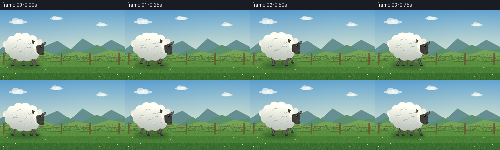
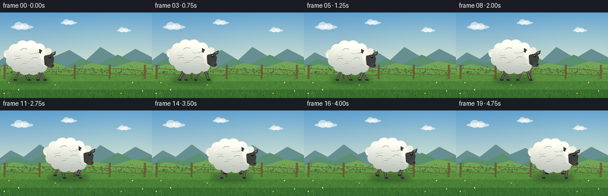

CODING AGENTS AS PIXEL WORLD MODELS
traex/GPT-5.6-Sol · instance_preservation_0015
点击播放 · 原生 RGB 像素
逐轮保存的候选
回放视频、检查图与代码变化。
每份候选均可单独播放。实际图片检查记录在下方工具轨迹中。
候选 01播放与检查图
点击播放 · 原生 RGB 像素


展开代码变化
--- 上一保存版本
+++ 本次保存版本
@@ -0,0 +1,202 @@
+from pathlib import Path
+import math
+import numpy as np
+from PIL import Image, ImageDraw, ImageFilter
+import artifact_io
+
+W, H, N = 256, 144, 20
+S = 4
+WW, HH = W*S, H*S
+rng = np.random.default_rng(7319)
+
+def sc(v): return int(round(v*S))
+def box(b): return tuple(sc(v) for v in b)
+def pts(p): return [(sc(x),sc(y)) for x,y in p]
+
+def ellipse(draw, b, fill, outline=None, width=1):
+ draw.ellipse(box(b), fill=fill, outline=outline, width=sc(width) if outline else 1)
+
+def line(draw, p, fill, width=1, joint='curve'):
+ draw.line(pts(p), fill=fill, width=max(1,sc(width)), joint=joint)
+
+def polygon(draw,p,fill): draw.polygon(pts(p),fill=fill)
+
+def make_background():
+ # atmospheric sky gradient
+ y = np.arange(HH)[:,None]
+ t = np.clip(y/(HH*.72),0,1)
+ top = np.array([91,158,207.],float); bot=np.array([224,232,208.],float)
+ sky = top[None,None,:]*(1-t[:,:,None])+bot[None,None,:]*t[:,:,None]
+ sky = np.repeat(sky, WW, axis=1)
+ # warm glow from upper-right
+ xx,yy=np.meshgrid(np.arange(WW),np.arange(HH))
+ glow=np.exp(-(((xx-WW*.82)/(WW*.43))**2+((yy-HH*.28)/(HH*.48))**2))*13
+ sky[:,:,0]+=glow; sky[:,:,1]+=glow*.72; sky[:,:,2]+=glow*.18
+ arr=np.uint8(np.clip(sky,0,255))
+ im=Image.fromarray(arr,'RGB'); d=ImageDraw.Draw(im,'RGBA')
+ # high wispy clouds
+ for cloud in [(36,24,1.0),(115,17,.72),(208,30,.65)]:
+ cx,cy,z=cloud
+ col=(255,255,247,145)
+ ellipse(d,(cx-18*z,cy-3*z,cx+20*z,cy+4*z),col)
+ ellipse(d,(cx-12*z,cy-8*z,cx+3*z,cy+5*z),col)
+ ellipse(d,(cx-1*z,cy-6*z,cx+12*z,cy+5*z),col)
+ # distant blue hills
+ polygon(d,[(-8,86),(18,67),(40,78),(67,57),(91,74),(117,63),(145,80),(169,58),(201,77),(228,61),(269,82),(269,108),(-8,108)],(102,143,145,255))
+ polygon(d,[(-8,94),(22,78),(52,85),(78,72),(108,92),(137,78),(166,87),(198,71),(226,83),(269,76),(269,112),(-8,112)],(91,143,112,255))
+ # distant sunlit pasture
+ polygon(d,[(-5,94),(24,87),(56,93),(91,84),(121,95),(155,85),(192,92),(224,82),(263,89),(263,144),(-5,144)],(116,164,85,255))
+ # horizontal meadow gradients
+ for yy0,col in [(99,(102,153,72,255)),(105,(89,145,63,255)),(116,(72,128,54,255)),(130,(55,108,46,255))]:
+ d.rectangle((0,sc(yy0),WW,HH),fill=col)
+ # far hedge, granular stipple
+ for _ in range(380):
+ x=float(rng.uniform(0,W)); yy0=float(rng.normal(98,3.2)); r=float(rng.uniform(.4,1.5))
+ c=rng.choice([(52,110,55,180),(66,125,57,180),(116,160,74,145),(40,98,55,130)])
+ ellipse(d,(x-r,yy0-r,x+r,yy0+r),tuple(c))
+ # old fence behind subject
+ for x in [8,67,126,185,244]:
+ polygon(d,[(x-1.7,88),(x+1.5,88),(x+1,112),(x-2.2,112)],(107,84,51,220))
+ line(d,[(x,94),(x+60,98)],(119,92,54,200),1.4)
+ line(d,[(x,103),(x+60,106)],(104,78,47,195),1.2)
+ # grass texture
+ for _ in range(1400):
+ x=float(rng.uniform(0,W)); yy0=float(rng.uniform(103,144))
+ depth=(yy0-101)/43
+ length=float(rng.uniform(.8,4.4)*(0.4+depth))
+ lean=float(rng.uniform(-1.5,1.5))
+ palette=[(44,99,43,115),(94,143,57,115),(131,165,67,100),(33,85,45,100),(180,179,83,70)]
+ line(d,[(x,yy0),(x+lean,yy0-length)],palette[int(rng.integers(len(palette)))],rng.uniform(.25,.7))
+ # small wildflowers, mostly away from walking path
+ for x0,y0,c in [(15,121,(244,214,90,230)),(31,133,(236,236,211,225)),(223,121,(245,226,116,220)),(240,135,(218,224,243,220)),(7,139,(239,235,216,220)),(204,139,(243,209,80,220)),(93,125,(231,232,217,170))]:
+ line(d,[(x0,y0),(x0+.3,y0-3)],(48,103,43,180),.5)
+ ellipse(d,(x0-1,y0-4,x0+1,y0-2),c)
+ return im
+
+BG = make_background()
+
+# fixed wool lobes in body-local coordinates; makes a coherent, recognizable outline
+WOOL = [(-24,-15,10),(-11,-20,11),(3,-20,11),(17,-16,10),(26,-8,9),
+ (27,4,9),(20,13,10),(7,16,11),(-7,16,11),(-20,12,10),(-29,3,10),(-30,-8,9)]
+CURLS = [(-20,-8,6,1.1),(-8,-13,7,-.5),(5,-12,6,.7),(17,-7,6,-.8),
+ (-18,3,7,-.5),(-4,1,6,.8),(10,2,7,-.5),(19,7,5,.6),(-8,10,5,-.5),(5,11,5,.5)]
+
+def gait(frame, phase_offset):
+ phase=(frame/5.0+phase_offset)%1.0
+ stance=.62
+ if phase<stance:
+ q=phase/stance; dx=10-21*q; lift=0
+ else:
+ q=(phase-stance)/(1-stance); dx=-11+21*q; lift=7.2*math.sin(math.pi*q)
+ return dx,lift,phase
+
+def draw_leg(d,cx,cy,frame,hipx,phase_offset,front=False):
+ dx,lift,phase=gait(frame,phase_offset)
+ hip=(cx+hipx,cy+10)
+ foot=(cx+hipx+dx,113-lift)
+ # bent knee; subtle flex even during stance
+ knee=(hip[0]+dx*.40 + (2.4 if dx<0 else -1.2), hip[1]+11.5-lift*.25)
+ outer=(55,56,52,255) if front else (72,75,68,245)
+ inner=(103,101,91,255) if front else (92,94,84,235)
+ line(d,[hip,knee,foot],outer,4.2)
+ line(d,[hip,knee,foot],inner,2.25)
+ # compact black cloven hoof points in direction of travel
+ hx,hy=foot
+ polygon(d,[(hx-2.2,hy-1),(hx+3.3,hy-.4),(hx+4,hy+1.6),(hx-1.2,hy+2)],(39,42,39,255))
+ line(d,[(hx+1,hy-.2),(hx+2.2,hy+1.2)],(21,24,22,220),.55)
+
+def wool_mask(cx,cy):
+ m=Image.new('L',(WW,HH),0); md=ImageDraw.Draw(m)
+ md.ellipse(box((cx-30,cy-18,cx+29,cy+17)),fill=255)
+ for ox,oy,r in WOOL:
+ md.ellipse(box((cx+ox-r,cy+oy-r,cx+ox+r,cy+oy+r)),fill=255)
+ return m
+
+def draw_sheep(base, frame):
+ d=ImageDraw.Draw(base,'RGBA')
+ cx=49+frame*6.05
+ cy=77.0+1.15*math.cos(frame*2*math.pi/5.0+.6)
+ # soft contact shadow responds to lifted feet but remains anchored
+ sh=Image.new('RGBA',(WW,HH),(0,0,0,0)); sd=ImageDraw.Draw(sh)
+ sd.ellipse(box((cx-36,107,cx+35,119)),fill=(19,46,26,100))
+ sh=sh.filter(ImageFilter.GaussianBlur(sc(3.4)))
+ base.alpha_composite(sh)
+ d=ImageDraw.Draw(base,'RGBA')
+ # rear pair first
+ draw_leg(d,cx,cy,frame,-17,.50,False)
+ draw_leg(d,cx,cy,frame, 16,.00,False)
+ # near pair, offset to show four distinct legs
+ draw_leg(d,cx,cy,frame,-11,.00,True)
+ draw_leg(d,cx,cy,frame, 21,.50,True)
+ # tail under wool: dark hint and fluffy cream tuft
+ polygon(d,[(cx-28,cy-8),(cx-39,cy-13),(cx-37,cy-2),(cx-28,cy+2)],(94,91,78,255))
+ ellipse(d,(cx-43,cy-15,cx-31,cy-2),(232,230,212,255))
+ ellipse(d,(cx-42,cy-11,cx-33,cy-1),(248,246,229,255))
+ # body wool mask with dimensional top-to-bottom shading
+ mask=wool_mask(cx,cy)
+ ypix=np.arange(HH)[:,None]/S
+ rel=np.clip((ypix-(cy-23))/45,0,1)
+ top=np.array([255,254,242.]); bottom=np.array([186,193,185.])
+ grad=top[None,None,:]*(1-rel[:,:,None])+bottom[None,None,:]*rel[:,:,None]
+ grad=np.repeat(grad,WW,axis=1)
+ # side lighting: brighter upper-right
+ xpix=np.arange(WW)[None,:]/S
+ light=5*np.exp(-((xpix-(cx+12))/32)**2)
+ grad+=light[:,:,None]
+ body=Image.fromarray(np.uint8(np.clip(grad,0,255)),'RGB').convert('RGBA')
+ body.putalpha(mask)
+ base.alpha_composite(body)
+ d=ImageDraw.Draw(base,'RGBA')
+ # wool scallop shadows and curls; restrained for soft fleece
+ for ox,oy,r,sgn in CURLS:
+ # short curved arc drawn on a local ellipse
+ b=box((cx+ox-r,cy+oy-r*.65,cx+ox+r,cy+oy+r*.65))
+ start=20 if sgn>0 else 190; end=142 if sgn>0 else 315
+ d.arc(b,start,end,fill=(137,148,145,100),width=sc(.65))
+ d.arc((b[0],b[1]-sc(.6),b[2],b[3]-sc(.6)),start,end,fill=(255,255,250,110),width=sc(.45))
+ # shoulder fluff integrates neck into body
+ ellipse(d,(cx+19,cy-16,cx+38,cy+13),(231,231,217,255))
+ ellipse(d,(cx+18,cy-14,cx+33,cy+2),(249,248,235,255))
+ ellipse(d,(cx+25,cy-8,cx+39,cy+7),(239,239,225,255))
+ # ears behind face
+ polygon(d,[(cx+26,cy-11),(cx+17,cy-17),(cx+17,cy-10),(cx+28,cy-5)],(56,58,55,255))
+ polygon(d,[(cx+34,cy-8),(cx+45,cy-13),(cx+44,cy-7),(cx+34,cy-2)],(58,60,57,255))
+ polygon(d,[(cx+36,cy-8),(cx+43,cy-11),(cx+42,cy-8)],(150,111,103,180))
+ # long charcoal face, slightly lowered in a relaxed walk
+ polygon(d,[(cx+27,cy-13),(cx+37,cy-11),(cx+42,cy-1),(cx+40,cy+10),
+ (cx+34,cy+15),(cx+26,cy+10),(cx+25,cy-2)],(59,61,58,255))
+ ellipse(d,(cx+29,cy-11,cx+40,cy+12),(61,63,60,255))
+ # muzzle
+ ellipse(d,(cx+33,cy+7,cx+42,cy+15),(72,70,65,255))
+ ellipse(d,(cx+38.1,cy+10,cx+40.2,cy+12),(24,27,25,255))
+ line(d,[(cx+35,cy+13),(cx+39,cy+13.5)],(31,33,31,220),.55)
+ # fleece cap, preserves white-sheep read
+ ellipse(d,(cx+22,cy-17,cx+34,cy-6),(245,244,229,255))
+ ellipse(d,(cx+27,cy-18,cx+38,cy-7),(238,239,225,255))
+ ellipse(d,(cx+20,cy-14,cx+29,cy-5),(252,250,237,255))
+ # alert eye and tiny warm catchlight
+ ellipse(d,(cx+33,cy-5,cx+37,cy-1),(18,21,19,255))
+ ellipse(d,(cx+34.2,cy-4.5,cx+35.5,cy-3.2),(231,208,139,255))
+ ellipse(d,(cx+34.5,cy-4.5,cx+35.0,cy-4.0),(255,255,245,255))
+ # subtle wool edge highlights
+ d.arc(box((cx-31,cy-21,cx+29,cy+14)),195,340,fill=(255,255,248,160),width=sc(.7))
+ return cx
+
+def render_frame(i):
+ im=BG.convert('RGBA').copy()
+ cx=draw_sheep(im,i)
+ # a handful of foreground blades overlap hooves, reinforcing ground contact
+ d=ImageDraw.Draw(im,'RGBA')
+ rr=np.random.default_rng(9000+i*0) # identical vegetation every frame
+ for x in [4,22,44,72,102,133,159,189,217,247]:
+ h=3+(x*7%6)
+ line(d,[(x,144),(x-1.5,144-h)],(32,80,39,180),.7)
+ if x%2:
+ line(d,[(x,141),(x+2.3,138)],(47,98,43,150),.55)
+ im=im.convert('RGB').resize((W,H),Image.Resampling.LANCZOS)
+ return np.asarray(im,dtype=np.uint8)
+
+frames=np.stack([render_frame(i) for i in range(N)])
+case_dir=Path(__file__).resolve().parent
+artifact_io.save(frames,case_dir)
+print('saved',frames.shape,frames.dtype)
可观测工具轨迹
实际执行的命令与返回图片。
命令 1exit 0
/bin/bash -lc "cat prompt.txt && printf '\\n---RULES---\\n' && cat GENERATION_RULES.md && printf '\\n---SPEC---\\n' && cat task_spec.json"
命令 2exit 0
/bin/bash -lc "find . -maxdepth 2 -type f -printf '%p\\n' | sort"
命令 3exit 0
/bin/bash -lc "sed -n '1,240p' artifact_io.py"
命令 4exit 0
/bin/bash -lc "cat > generate.py <<'PY'
from pathlib import Path
import math
import numpy as np
from PIL import Image, ImageDraw, ImageFilter
import artifact_io
W, H, N = 256, 144, 20
S = 4
WW, HH = W*S, H*S
rng = np.random.default_rng(7319)
def sc(v): return int(round(v*S))
def box(b): return tuple(sc(v) for v in b)
def pts(p): return [(sc(x),sc(y)) for x,y in p]
def ellipse(draw, b, fill, outline=None, width=1):
draw.ellipse(box(b), fill=fill, outline=outline, width=sc(width) if outline else 1)
def line(draw, p, fill, width=1, joint='curve'):
draw.line(pts(p), fill=fill, width=max(1,sc(width)), joint=joint)
def polygon(draw,p,fill): draw.polygon(pts(p),fill=fill)
def make_background():
# atmospheric sky gradient
y = np.arange(HH)[:,None]
t = np.clip(y/(HH*.72),0,1)
top = np.array([91,158,207.],float); bot=np.array([224,232,208.],float)
sky = top[None,None,:]*(1-t[:,:,None])+bot[None,None,:]*t[:,:,None]
sky = np.repeat(sky, WW, axis=1)
# warm glow from upper-right
xx,yy=np.meshgrid(np.arange(WW),np.arange(HH))
glow=np.exp(-(((xx-WW*.82)/(WW*.43))**2+((yy-HH*.28)/(HH*.48))**2))*13
sky[:,:,0]+=glow; sky[:,:,1]+=glow*.72; sky[:,:,2]+=glow*.18
arr=np.uint8(np.clip(sky,0,255))
im=Image.fromarray(arr,'RGB'); d=ImageDraw.Draw(im,'RGBA')
# high wispy clouds
for cloud in [(36,24,1.0),(115,17,.72),(208,30,.65)]:
cx,cy,z=cloud
col=(255,255,247,145)
ellipse(d,(cx-18*z,cy-3*z,cx+20*z,cy+4*z),col)
ellipse(d,(cx-12*z,cy-8*z,cx+3*z,cy+5*z),col)
ellipse(d,(cx-1*z,cy-6*z,cx+12*z,cy+5*z),col)
# distant blue hills
polygon(d,[(-8,86),(18,67),(40,78),(67,57),(91,74),(117,63),(145,80),(169,58),(201,77),(228,61),(269,82),(269,108),(-8,108)],(102,143,145,255))
polygon(d,[(-8,94),(22,78),(52,85),(78,72),(108,92),(137,78),(166,87),(198,71),(226,83),(269,76),(269,112),(-8,112)],(91,143,112,255))
# distant sunlit pasture
polygon(d,[(-5,94),(24,87),(56,93),(91,84),(121,95),(155,85),(192,92),(224,82),(263,89),(263,144),(-5,144)],(116,164,85,255))
# horizontal meadow gradients
for yy0,col in [(99,(102,153,72,255)),(105,(89,145,63,255)),(116,(72,128,54,255)),(130,(55,108,46,255))]:
d.rectangle((0,sc(yy0),WW,HH),fill=col)
# far hedge, granular stipple
for _ in range(380):
x=float(rng.uniform(0,W)); yy0=float(rng.normal(98,3.2)); r=float(rng.uniform(.4,1.5))
c=rng.choice([(52,110,55,180),(66,125,57,180),(116,160,74,145),(40,98,55,130)])
ellipse(d,(x-r,yy0-r,x+r,yy0+r),tuple(c))
# old fence behind subject
for x in [8,67,126,185,244]:
polygon(d,[(x-1.7,88),(x+1.5,88),(x+1,112),(x-2.2,112)],(107,84,51,220))
line(d,[(x,94),(x+60,98)],(119,92,54,200),1.4)
line(d,[(x,103),(x+60,106)],(104,78,47,195),1.2)
# grass texture
for _ in range(1400):
x=float(rng.uniform(0,W)); yy0=float(rng.uniform(103,144))
depth=(yy0-101)/43
length=float(rng.uniform(.8,4.4)*(0.4+depth))
lean=float(rng.uniform(-1.5,1.5))
palette=[(44,99,43,115),(94,143,57,115),(131,165,67,100),(33,85,45,100),(180,179,83,70)]
line(d,[(x,yy0),(x+lean,yy0-length)],palette[int(rng.integers(len(palette)))],rng.uniform(.25,.7))
# small wildflowers, mostly away from walking path
for x0,y0,c in [(15,121,(244,214,90,230)),(31,133,(236,236,211,225)),(223,121,(245,226,116,220)),(240,135,(218,224,243,220)),(7,139,(239,235,216,220)),(204,139,(243,209,80,220)),(93,125,(231,232,217,170))]:
line(d,[(x0,y0),(x0+.3,y0-3)],(48,103,43,180),.5)
ellipse(d,(x0-1,y0-4,x0+1,y0-2),c)
return im
BG = make_background()
# fixed wool lobes in body-local coordinates; makes a coherent, recognizable outline
WOOL = [(-24,-15,10),(-11,-20,11),(3,-20,11),(17,-16,10),(26,-8,9),
(27,4,9),(20,13,10),(7,16,11),(-7,16,11),(-20,12,10),(-29,3,10),(-30,-8,9)]
CURLS = [(-20,-8,6,1.1),(-8,-13,7,-.5),(5,-12,6,.7),(17,-7,6,-.8),
(-18,3,7,-.5),(-4,1,6,.8),(10,2,7,-.5),(19,7,5,.6),(-8,10,5,-.5),(5,11,5,.5)]
def gait(frame, phase_offset):
phase=(frame/5.0+phase_offset)%1.0
stance=.62
if phase<stance:
q=phase/stance; dx=10-21*q; lift=0
else:
q=(phase-stance)/(1-stance); dx=-11+21*q; lift=7.2*math.sin(math.pi*q)
return dx,lift,phase
def draw_leg(d,cx,cy,frame,hipx,phase_offset,front=False):
dx,lift,phase=gait(frame,phase_offset)
hip=(cx+hipx,cy+10)
foot=(cx+hipx+dx,113-lift)
# bent knee; subtle flex even during stance
knee=(hip[0]+dx*.40 + (2.4 if dx<0 else -1.2), hip[1]+11.5-lift*.25)
outer=(55,56,52,255) if front else (72,75,68,245)
inner=(103,101,91,255) if front else (92,94,84,235)
line(d,[hip,knee,foot],outer,4.2)
line(d,[hip,knee,foot],inner,2.25)
# compact black cloven hoof points in direction of travel
hx,hy=foot
polygon(d,[(hx-2.2,hy-1),(hx+3.3,hy-.4),(hx+4,hy+1.6),(hx-1.2,hy+2)],(39,42,39,255))
line(d,[(hx+1,hy-.2),(hx+2.2,hy+1.2)],(21,24,22,220),.55)
def wool_mask(cx,cy):
m=Image.new('L',(WW,HH),0); md=ImageDraw.Draw(m)
md.ellipse(box((cx-30,cy-18,cx+29,cy+17)),fill=255)
for ox,oy,r in WOOL:
md.ellipse(box((cx+ox-r,cy+oy-r,cx+ox+r,cy+oy+r)),fill=255)
return m
def draw_sheep(base, frame):
d=ImageDraw.Draw(base,'RGBA')
cx=49+frame*6.05
cy=77.0+1.15*math.cos(frame*2*math.pi/5.0+.6)
# soft contact shadow responds to lifted feet but remains anchored
sh=Image.new('RGBA',(WW,HH),(0,0,0,0)); sd=ImageDraw.Draw(sh)
sd.ellipse(box((cx-36,107,cx+35,119)),fill=(19,46,26,100))
sh=sh.filter(ImageFilter.GaussianBlur(sc(3.4)))
base.alpha_composite(sh)
d=ImageDraw.Draw(base,'RGBA')
# rear pair first
draw_leg(d,cx,cy,frame,-17,.50,False)
draw_leg(d,cx,cy,frame, 16,.00,False)
# near pair, offset to show four distinct legs
draw_leg(d,cx,cy,frame,-11,.00,True)
draw_leg(d,cx,cy,frame, 21,.50,True)
# tail under wool: dark hint and fluffy cream tuft
polygon(d,[(cx-28,cy-8),(cx-39,cy-13),(cx-37,cy-2),(cx-28,cy+2)],(94,91,78,255))
ellipse(d,(cx-43,cy-15,cx-31,cy-2),(232,230,212,255))
ellipse(d,(cx-42,cy-11,cx-33,cy-1),(248,246,229,255))
# body wool mask with dimensional top-to-bottom shading
mask=wool_mask(cx,cy)
ypix=np.arange(HH)[:,None]/S
rel=np.clip((ypix-(cy-23))/45,0,1)
top=np.array([255,254,242.]); bottom=np.array([186,193,185.])
grad=top[None,None,:]*(1-rel[:,:,None])+bottom[None,None,:]*rel[:,:,None]
grad=np.repeat(grad,WW,axis=1)
# side lighting: brighter upper-right
xpix=np.arange(WW)[None,:]/S
light=5*np.exp(-((xpix-(cx+12))/32)**2)
grad+=light[:,:,None]
body=Image.fromarray(np.uint8(np.clip(grad,0,255)),'RGB').convert('RGBA')
body.putalpha(mask)
base.alpha_composite(body)
d=ImageDraw.Draw(base,'RGBA')
# wool scallop shadows and curls; restrained for soft fleece
for ox,oy,r,sgn in CURLS:
# short curved arc drawn on a local ellipse
b=box((cx+ox-r,cy+oy-r*.65,cx+ox+r,cy+oy+r*.65))
start=20 if sgn>0 else 190; end=142 if sgn>0 else 315
d.arc(b,start,end,fill=(137,148,145,100),width=sc(.65))
d.arc((b[0],b[1]-sc(.6),b[2],b[3]-sc(.6)),start,end,fill=(255,255,250,110),width=sc(.45))
# shoulder fluff integrates neck into body
ellipse(d,(cx+19,cy-16,cx+38,cy+13),(231,231,217,255))
ellipse(d,(cx+18,cy-14,cx+33,cy+2),(249,248,235,255))
ellipse(d,(cx+25,cy-8,cx+39,cy+7),(239,239,225,255))
# ears behind face
polygon(d,[(cx+26,cy-11),(cx+17,cy-17),(cx+17,cy-10),(cx+28,cy-5)],(56,58,55,255))
polygon(d,[(cx+34,cy-8),(cx+45,cy-13),(cx+44,cy-7),(cx+34,cy-2)],(58,60,57,255))
polygon(d,[(cx+36,cy-8),(cx+43,cy-11),(cx+42,cy-8)],(150,111,103,180))
# long charcoal face, slightly lowered in a relaxed walk
polygon(d,[(cx+27,cy-13),(cx+37,cy-11),(cx+42,cy-1),(cx+40,cy+10),
(cx+34,cy+15),(cx+26,cy+10),(cx+25,cy-2)],(59,61,58,255))
ellipse(d,(cx+29,cy-11,cx+40,cy+12),(61,63,60,255))
# muzzle
ellipse(d,(cx+33,cy+7,cx+42,cy+15),(72,70,65,255))
ellipse(d,(cx+38.1,cy+10,cx+40.2,cy+12),(24,27,25,255))
line(d,[(cx+35,cy+13),(cx+39,cy+13.5)],(31,33,31,220),.55)
# fleece cap, preserves white-sheep read
ellipse(d,(cx+22,cy-17,cx+34,cy-6),(245,244,229,255))
ellipse(d,(cx+27,cy-18,cx+38,cy-7),(238,239,225,255))
ellipse(d,(cx+20,cy-14,cx+29,cy-5),(252,250,237,255))
# alert eye and tiny warm catchlight
ellipse(d,(cx+33,cy-5,cx+37,cy-1),(18,21,19,255))
ellipse(d,(cx+34.2,cy-4.5,cx+35.5,cy-3.2),(231,208,139,255))
ellipse(d,(cx+34.5,cy-4.5,cx+35.0,cy-4.0),(255,255,245,255))
# subtle wool edge highlights
d.arc(box((cx-31,cy-21,cx+29,cy+14)),195,340,fill=(255,255,248,160),width=sc(.7))
return cx
def render_frame(i):
im=BG.convert('RGBA').copy()
cx=draw_sheep(im,i)
# a handful of foreground blades overlap hooves, reinforcing ground contact
d=ImageDraw.Draw(im,'RGBA')
rr=np.random.default_rng(9000+i*0) # identical vegetation every frame
for x in [4,22,44,72,102,133,159,189,217,247]:
h=3+(x*7%6)
line(d,[(x,144),(x-1.5,144-h)],(32,80,39,180),.7)
if x%2:
line(d,[(x,141),(x+2.3,138)],(47,98,43,150),.55)
im=im.convert('RGB').resize((W,H),Image.Resampling.LANCZOS)
return np.asarray(im,dtype=np.uint8)
frames=np.stack([render_frame(i) for i in range(N)])
case_dir=Path(__file__).resolve().parent
artifact_io.save(frames,case_dir)
print('saved',frames.shape,frames.dtype)
PY
python generate.py"视觉工具实际返回图片 1

视觉工具实际返回图片 2

保存候选 1 份；完成命令 4 次；可验证图片返回 2 张。原始 API 响应与完整日志保留在本地。